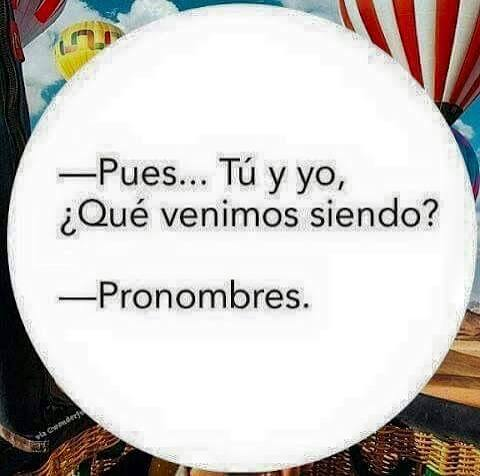

Pronombre
• Definición propia: Es la palabra que entra al rescate para sustituir a un sustantivo cuando ya sabemos de quién hablamos, evitando que repitamos el mismo nombre una y otra vez.
• Banco de palabras: Ellos, esto, tú, nosotros, alguien.
• Oración de aplicación: Ellos armaron la página web en solo un fin de semana.
